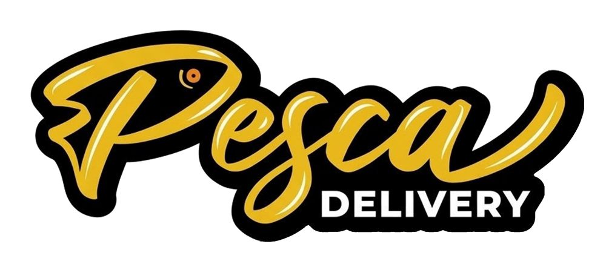
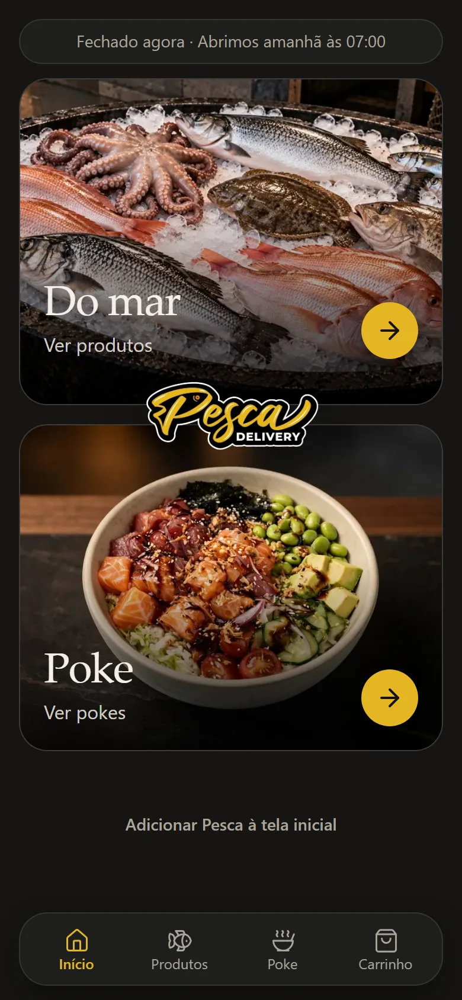
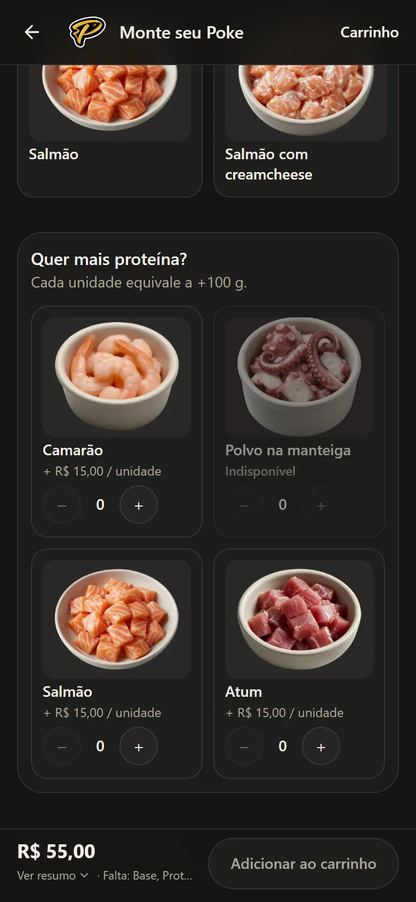

Pesca Delivery
Além da loja.
Da personalização de um Poke pelo WhatsApp a uma experiência digital que conecta compra e operação.
- Papel
- Product Designer & Design Engineer
- Disciplinas
- Product Design · UX/UI · Design Engineering
- Processo
- Desenvolvimento assistido por IA
Loja
Onde o cliente decide
Regras compartilhadas
A fonte da verdade
Painel
Onde a operação age



Capturas da loja pública em produção (interface em português) · out. 2026